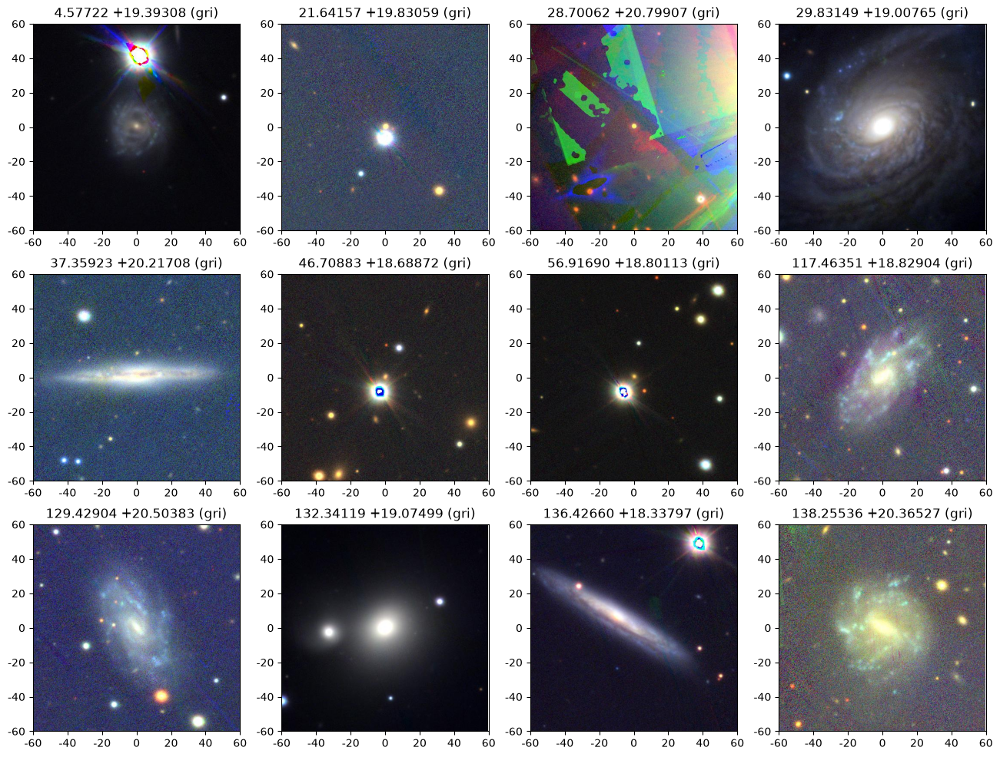
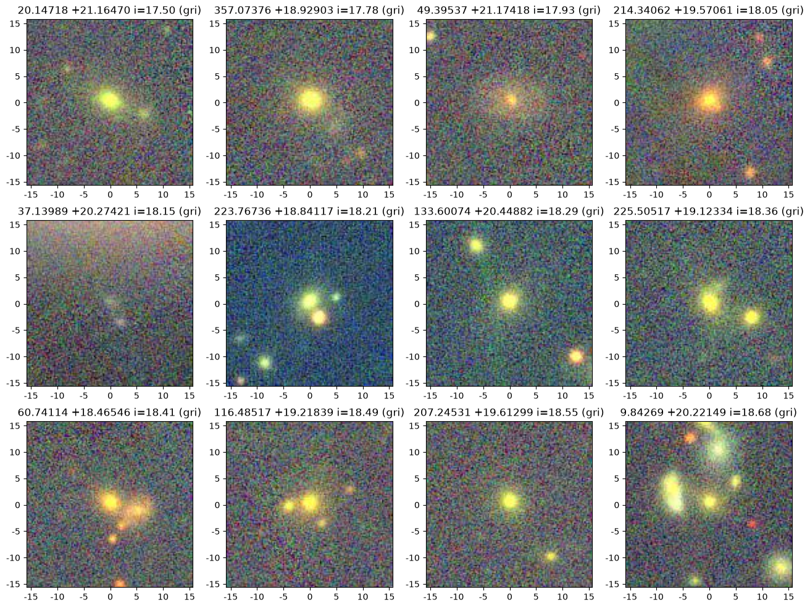

PanSTARRS “20 queries” using MAST’s TAP service: Queries with Cutout Visualizations#
Overview#
This notebook is part of a series demonstrating how to address a set of scientific questions using SQL-like Astronomical Data Query Language (ADQL) queries via a Virtual Observatory standard Table Access Protocol (TAP) service at MAST.
This series aims to be an introduction to how complex queries can be executed using TAP (which might otherwise not be possible to specify with astroquery), and to be a resource for how to access MAST databases after the MAST CASJobs service is retired.
These queries are drawn from the 20 queries for SDSS as presented by Gray, Szalay, et al. (2002), adapted for the PanSTARRS PS1 database.
This notebook presents a subset of queries leveraging filtering on column(s) using pre-specified criteria, together with cutouts for visualization of the resulting sample.
For more examples of filtering techniques in TAP queries (including using bitmask filtering for data quality cuts), please see the PS1 “20 queries” Basic Filtering tutorial.
Learning Goals#
By the end of this tutorial, you will:
Understand how to design and perform filtering queries (with joins) using TAP services, and obtain cutouts to display color images of sample objects.
Table of Contents#
Introduction#
Welcome! This notebook shows how to query MAST’s PanSTARRS data using Astronomical Data Query Language (ADQL). We address two scientific questions by combining filtering constraints using ADQL “WHERE” clauses, and then obtaining RGB cutouts to visualize objects in our resulting samples. As you’ll see in our examples, MAST uses a standard Table Access Protocol (TAP) to handle these queries.
These queries are drawn from (or closely modeled on) the “20 queries for SDSS” presented by Gray, Szalay, et al. (2002). Taken as a whole, this collection provides worked examples on how to leverage relational database capabilities to answer scientific questions, with the aim of providing concrete starting points and references for designing queries for other research applications, both for PanSTARRS and other large data volume missions (including Roman).
Imports#
This tutorial makes use of the following libraries:
numpy for numerical calculations
pyvo for querying the MAST catalogs via TAP
matplotlib.pyplot for plotting data
time, datetime to determine query duration
requests, warnings, BytesIO, PIL, astropy.table Table to fetch & display cutout images of selected objects
import numpy as np
import pyvo as vo
import matplotlib.pyplot as plt
import datetime
import time
import requests
import warnings
from io import BytesIO
from PIL import Image
from astropy.table import Table
Connect to TAP service#
For all queries, we will be connecting to the PanSTARRS (PS1) Data release 2 (DR2) catalog. Specifically, we will use the ps1_dr2 catalogs available from the new postgres-backed TAP service, which offers improved performance relative to the legacy database (by factors of 100 or greater, in many cases).
See the PS1 documentation migration guide for information about the tables available with this new TAP service.
We begin by connecting to the MAST PanSTARRS DR2 TAP service.
(Note: See https://mast.stsci.edu/vo-tap/ for a full list of MAST TAP services.)
TAP_service = vo.dal.TAPService(
"https://mast.stsci.edu/vo-tap/api/v0.1/mast_catalogs"
)
Using the pyvo describe() method, we can access an overview of the methods, capabilities, and maximum result set size for this service.
TAP_service.describe()
Capability ivo://ivoa.net/std/TAP
Interface vs:ParamHTTP
https://mast.stsci.edu/vo-tap/api/v0.1/mast_catalogs
Language ADQL
ivo://ivoa.net/std/TAPRegExt#features-adqlgeo
CONTAINS
POINT
CIRCLE
ivo://edu.stsci.archive/std/exts#features-adql-bitwise
BIT_AND
The ampersand (&) operator performs a bitwise AND operation on two integer operands
BIT_OR
The vertical bar (|) operator performs a bitwise OR operation on two integer operands.
BIT_XOR
The circumflex (^) operator performs a bitwise XOR (exclusive or) operation on two integer operands.
BIT_NOT
The tilde (~) operator performs a bitwise NOT operation on an integer operand.
Output format application/json
Also available as json
Output format text/csv;header=present
Also available as csv
Output format application/xml
Also available as xml
Output format application/x-votable+xml
Also available as votable
Maximum size of resultsets
Default 100000 row
Maximum 100000 row
Capability ivo://ivoa.net/std/DALI#examples
Interface vr:WebBrowser
https://mast.stsci.edu/vo-tap/api/v0.1/mast_catalogs/examples
As expected, this service supports ADQL. You can also see the maximum result size is 100,000 rows.
Obtaining information about PanSTARRS catalogs#
In addition to the PanSTARRS DR2 catalogs documentation, we can search and explore information about the PS1 DR2 tables using MAST’s Catalog Schema Browser. This schema browser provides searchable listings of column names, units, and descriptions for the PS1 DR2 tables available via this TAP service. (The Catalog Schema Browser is also integrated within TIKE/RRN, and can be launched via its icon on the Launcher.)
We draw on this documentation and schema browser to identify the relevant tables & columns needed to address the queries below.
Q4#
Query 4 poses:
Find galaxies with an isophotal surface brightness (SB) larger than 24 in the red band, with an ellipticity>0.5, and with the major axis of the ellipse between 30 and 60 arcsec (a large galaxy).
Q4: Constructing the query#
Here we will determine the surface brightness in the r band, using Kron magnitudes and radii.
We will determine ellipticities and major axis sizes from Sersic fits.
These measurements are stored in the following tables:
ps1_dr2.stack_object: Kron radiusrkronradto get size for surface brightness calculation & size cuts, andrkronmagfor surface brightness calculationps1_dr2.stack_model_fit_ser: Use the minor/major axis ratiorserabto get the ellipticity (with \(\mathrm{ellipiticy} = \sqrt{1-(b/a)^2}> 0.5\) translating torserab=\(b/a < \sqrt{0.75}\)).
Additionally, we perform quality control by requiring ps1_dr2.stack_object.ndetections>3 and ps1_dr2.stack_object.nr>1 (number of detections total and in the r band), and ps1_dr2.stack_object.rpsfqfperfect>0.9 to weed out some bad objects. We also require ps1_dr2.stack_model_fit_ser.rserchisq>0 to ensure the Sersic fit has at least minimal quality.
Finally, to ensure the query does not exceed the time or maximum row limit for a single TAP query, we further restrict this query to PanSTARRS slice 16 (by requiring objid to be between 129500000000000000 and 133500000000000000).
We combine these constraints to construct the ADQL query below, with relevant columns and derived quantities (\(r\)-band surface magnitude, ellipticity) as our list of columns to be returned.
adql_query = """
SELECT so.objid, so.ramean, so.decmean, so.rkronrad, so.rkronmag,
so.rkronmag + 2.5*log10(PI()*POWER(so.rkronrad,2)) as rsurfmag,
smf.rserab, smf.rserchisq,
sqrt(1-power(smf.rserab,2)) as ellipticity
FROM ps1_dr2.stack_model_fit_ser AS smf
JOIN ps1_dr2.stack_object AS so ON
smf.objid=so.objid
AND smf.uniquepspsstid=so.uniquepspsstid
WHERE smf.objid BETWEEN 129500000000000000 AND 133500000000000000 -- select just slice 16
AND so.objid BETWEEN 129500000000000000 AND 133500000000000000
AND so.rkronrad BETWEEN 30 AND 60
AND so.rkronmag > 0
AND so.rkronmag + 2.5*log10(PI()*POWER(so.rkronrad,2)) < 24 -- mag per sq arcsec
AND smf.rserchisq > 0
AND smf.rserab < sqrt(0.75)
AND so.rpsfqfperfect > 0.9
AND so.ndetections > 3
AND so.nr > 1
"""
We now submit this query to the TAP service.
start = time.time()
job = TAP_service.run_async(adql_query)
end = time.time()
print(f"Elapsed time: {str(datetime.timedelta(seconds=end-start))}")
Elapsed time: 0:01:39.676949
/home/runner/micromamba/envs/ci-env/lib/python3.13/site-packages/pyvo/dal/query.py:403: DALOverflowWarning: Results truncated due to server limits. Consider setting a maxrec value.
warn("Results truncated due to server limits. Consider "
This query takes about 30 seconds to run and returns 67 rows. For all 32 slices, this would take a total time of ~24 minutes and return ~2100 rows.
Q4: Inspecting & visualizing the results#
To inspect our results, we convert the TAP results to an astropy table, for easy viewing.
TAP_results = job.to_table()
TAP_results
| objid | ramean | decmean | rkronrad | rkronmag | rsurfmag | rserab | rserchisq | ellipticity |
|---|---|---|---|---|---|---|---|---|
| deg | deg | mag | ||||||
| int64 | float64 | float64 | float32 | float32 | float32 | float32 | float32 | float32 |
| 129571656922317917 | 165.6923071955835 | 17.981267322589133 | 47.0225 | 13.2262 | 22.830603 | 0.357503 | 29.6362 | 0.933912 |
| 129791982257185496 | 198.22568876877853 | 18.162502778857846 | 32.0881 | 9.06252 | 17.837114 | 0.376125 | 589136.0 | 0.9265689 |
| 132381754829274344 | 175.48290540840225 | 20.319824233137 | 33.538 | 15.1207 | 23.99126 | 0.324495 | 55.0924 | 0.9458874 |
| 132133578467863180 | 357.84685258112404 | 20.110493255032573 | 31.4506 | 12.5057 | 21.23672 | 0.12646 | 174.615 | 0.99197173 |
| 133411457856369414 | 145.78563914538464 | 21.182387427090244 | 30.362 | 13.6301 | 22.284626 | 0.526629 | 67.8163 | 0.8500952 |
| 132271566175494142 | 156.6177332583631 | 20.228103616750428 | 34.6617 | 13.4025 | 22.344624 | 0.34078 | 66.2472 | 0.94014305 |
| 129571656924836498 | 165.69247893084773 | 17.979923685742627 | 42.3181 | 13.3695 | 22.745007 | 0.302082 | 27.4905 | 0.95328194 |
| 131701758527120325 | 175.85265037622653 | 19.749828792921466 | 32.8547 | 13.4823 | 22.308163 | 0.377268 | 201.344 | 0.9261041 |
| 132241811354816494 | 181.13550412607987 | 20.20494647353279 | 30.4517 | 13.2449 | 21.905832 | 0.853847 | 169.449 | 0.5205241 |
| ... | ... | ... | ... | ... | ... | ... | ... | ... |
| 132431382553828676 | 138.25535616948935 | 20.365265367512688 | 33.0612 | 13.6101 | 22.449568 | 0.610398 | 128.724 | 0.7920949 |
| 130001364266056138 | 136.42659537202726 | 18.33796642256077 | 37.7133 | 13.5256 | 22.650948 | 0.408148 | 160.082 | 0.91291577 |
| 130121810549530365 | 181.05491798998344 | 18.43317109807935 | 30.9518 | 13.4957 | 22.192003 | 0.701149 | 39.696 | 0.7130148 |
| 133373541270346374 | 354.12706392790943 | 21.146550062366327 | 31.4483 | 13.9222 | 22.65306 | 0.153395 | 103.706 | 0.98816496 |
| 132133578483852503 | 357.84842886002417 | 20.10996359287225 | 34.6572 | 12.3157 | 21.257542 | 0.234646 | 179.713 | 0.9720809 |
| 132771635238673946 | 163.52388677167343 | 20.64444937850433 | 34.3373 | 13.5346 | 22.456306 | 0.440721 | 2235.72 | 0.89764416 |
| 132951722099024557 | 172.20989583868442 | 20.795019985650388 | 31.9708 | 11.9064 | 20.673042 | 0.320779 | 38750.6 | 0.94715405 |
| 129581656969417817 | 165.6970399546111 | 17.989389610861693 | 30.3458 | 13.5244 | 22.177767 | 0.239591 | 94.535 | 0.9708739 |
| 132260373554421443 | 37.35540936045745 | 20.21735954804272 | 30.8467 | 14.4736 | 23.16252 | 0.709251 | 14.9051 | 0.70495605 |
To visualize the results, we retrieve cutouts for a subset of these galaxies. We’ll need three functions for this:
get_image_table: Query for a list of images based on positionget_imurl: Query for URLs corresponding to the images in (1)get_im: Actually retrieve the images we located in (2)
# Adapted from https://spacetelescope.github.io/mast_notebooks/notebooks/PanSTARRS/PS1_image/PS1_image.html
def get_image_table(ra, dec, filters="grizy"):
"""
Query ps1filenames.py service to get a list of images
ra, dec = position in degrees
filters = string with filters to include. includes all by default
Returns a table with the results
"""
service = "https://ps1images.stsci.edu/cgi-bin/ps1filenames.py"
# The final URL appends our query to the PS1 image service
url = f"{service}?ra={ra}&dec={dec}&filters={filters}"
# Read the ASCII table returned by the url
table = Table.read(url, format='ascii')
return table
def get_imurl(ra, dec, size=240, output_size=None, filters="grizy", color=False):
"""
Get URL for images in the table
ra, dec = position in degrees
size = extracted image size in pixels (0.25 arcsec/pixel)
output_size = output (display) image size in pixels (default = size).
output_size has no effect for fits format images.
filters = string with filters to include. choose from "grizy"
color = if True, creates a color image (only for jpg or png format).
Default is return a list of URLs for single-filter grayscale images.
Returns a string with the URL
"""
im_format = "jpg"
# Call the original helper function to get the table
table = get_image_table(ra, dec, filters=filters)
url = (f"https://ps1images.stsci.edu/cgi-bin/fitscut.cgi?"
f"ra={ra}&dec={dec}&size={size}&format={im_format}")
# Append an output size, if requested
if output_size:
url = url + f"&output_size={output_size}"
# Sort filters from red to blue
flist = ["yzirg".find(x) for x in table['filter']]
table = table[np.argsort(flist)]
if color:
# We need at least 3 filters to create a color image
if len(table) < 3:
raise ValueError("at least three filters are required for an RGB color image")
# If more than 3 filters, pick 3 filters from the availble results
if len(table) > 3:
table = table[[0, len(table)//2, len(table)-1]]
# Create the red, green, and blue files for our image
for i, param in enumerate(["red", "green", "blue"]):
url = url + f"&{param}={table['filename'][i]}"
else:
# If not a color image, only one filter should be given.
if len(table) > 1:
warnings.warn('Too many filters for monochrome image. Using only 1st filter.')
# Use red for monochrome images
urlbase = url + "&red="
url = []
filename = table[0]['filename']
url = urlbase+filename
return url
def get_im(ra, dec, size=240, output_size=None, filters="g", color=False):
"""
Get image at a sky position. Depends on get_imurl
ra, dec = position in degrees
size = extracted image size in pixels (0.25 arcsec/pixel)
output_size = output (display) image size in pixels (default = size).
output_size has no effect for fits format images.
filters = string with filters to include
Returns the image
"""
# Image URL
url = get_imurl(
ra, dec, size=size, filters=filters,
output_size=output_size, color=color
)
# JPEG: Request the file, read the bytes
r = requests.get(url)
im = Image.open(BytesIO(r.content))
return im
We specify that all cutouts will be 2 arcmin on a side (converted to pixels), and show only cutouts for a dozen pre-selected set of objects (specified by their RA, Dec).
# Set image size in pixels (0.25 arcsec/pix)
size = 480
# Get inds for a given pre-selected set of objects
inds = []
ras = [4.57722, 21.64157, 28.70062, 29.83149,
37.35923, 46.70883, 56.91690, 117.46351,
129.42904, 132.34119, 136.42660, 138.25536]
decs = [19.39308, 19.83059, 20.79907, 19.00765,
20.21708, 18.68872, 18.80113, 18.82904,
20.50383, 19.07499, 18.33797, 20.36527]
for ra, dec in zip(ras, decs):
inds.append(
int(np.where(
(np.abs(TAP_results['ramean']-ra) < 0.00002)
& (np.abs(TAP_results['decmean']-dec) < 0.00002)
)[0][0])
)
# Create the axes, and for each index, obtain and plot the cutout color image.
f, axes = plt.subplots(3, 4)
f.set_size_inches(16, 12)
axes = axes.flatten()
for i, ind in enumerate(inds):
ra = TAP_results["ramean"][ind]
dec = TAP_results["decmean"][ind]
# Color image
cim = get_im(ra, dec, size=size, filters="gri", color=True)
# Color image subplot
sgn = "+"
if np.sign(dec) < 0:
sgn = "-"
axes[i].set_title(f'{ra:0.5f} {sgn}{dec:0.5f} (gri)')
axes[i].imshow(cim, origin="upper")
# 7 ticks:
halfw = int(np.floor(size/2 * 0.25))
ticklabels = np.linspace(-halfw, halfw, num=7, dtype=int)
ticklocs = ticklabels / 0.25 + size/2
axes[i].set_xticks(ticklocs, labels=ticklabels)
axes[i].set_yticks(ticklocs[::-1], labels=ticklabels)

The dozen galaxies shown above are indeed mostly large galaxies (again, the cutouts are 2 arcmin on a side), as specified in our selection criteria. However, some are bad images that we could likely have filtered out using quality flags. Specifically, 3 images show bright, saturated stars, while another is a poor quality image with numerous reduction artifacts.
Q5#
Query 5 poses:
Find all galaxies with a deVaucouleours profile (r\(^{1/4}\) falloff of intensity on disk) and the photometric colors consistent with an elliptical galaxy.
Q5: Constructing the query#
This query, as implemented in Gray et al. for SDSS, is complex and difficult to replicate exactly (e.g., as the absorption/reddening tables are not available for PanSTARRS). Thus here we implement similar color cuts to make this example comparable to the SDSS query.
Furthermore, PS1 does not have likelihoods for the de Vaucouleurs versus Sersic morphological fits, so instead heuristic criteria are applied. If the Sersic fit failed, or if it has a higher chi-square value than the de Vaucouleurs fit, then we assume the galaxy is best fit by the de Vaucouleurs profile.
These measurements are available by combining the following tables:
ps1_dr2.stack_object: Kron magnitudes ingrifor color & magnitude constraints (used in place of Petrosian magnitudes, as the PS1 documentation states Petrosian magnitudes are unreliable), Kron radiusrkronradto get size, Galactic latitudeb, to avoid the Milky Way Galactic plane (where dust and foreground stars would impact measurements)ps1_dr2.stack_model_fit_ser: Sersic fits, including chi-squareps1_dr2.stack_model_fit_de_v: de Vaucouleurs fits, including chi-square
Additionally, we perform quality control by requiring ps1_dr2.stack_object.ndetections>3 and ps1_dr2.stack_object.nr>1 (number of detections total and in the r band; and the same in the g and i bands), and ps1_dr2.stack_object.rpsfqfperfect>0.9 (and the same in the g and i bands) to weed out some bad objects. We also require ps1_dr2.stack_model_fit_de_v.gdevchisq>0 (and similarly for r and i) to ensure the de Vaucouleurs fit has at least minimal quality. Finally, we use PSF and Kron magnitude differences to select for galaxies (excluding point sources).
Finally, to ensure the query does not exceed the time or maximum row limit for a single TAP query, we further restrict this query to PanSTARRS slice 16 (by requiring objid to be between 129500000000000000 and 133500000000000000).
The ADQL query below implements these constraints, after joining all three required tables together.
adql_query = """
select so.objid, so.ramean, so.decmean, so.b,
so.rkronrad, so.gkronmag, so.rkronmag, so.ikronmag,
-- axis ratios and chi-square for de Vaucoulers fits
fdev.gdevab, fdev.rdevab, fdev.idevab,
fdev.gdevchisq, fdev.rdevchisq, fdev.idevchisq,
-- axis ratios and chi-square for the Sersic fits
fser.gserab, fser.rserab, fser.iserab,
fser.gserchisq, fser.rserchisq, fser.iserchisq
from ps1_dr2.stack_model_fit_ser as fser
join ps1_dr2.stack_model_fit_de_v as fdev on fser.objid=fdev.objid and fser.uniquepspsstid=fdev.uniquepspsstid
join ps1_dr2.stack_object as so on fser.objid=so.objid and fser.uniquepspsstid=so.uniquepspsstid
where fser.objid between 129500000000000000 and 133500000000000000 -- select just slice 16
and fdev.objid between 129500000000000000 and 133500000000000000
and so.objid between 129500000000000000 and 133500000000000000
and abs(so.b) > 20 -- avoid Milky Way plane
and (so.gkronmag+so.rkronmag+so.ikronmag) > 0 -- require gri detections
and (so.ipsfmag - so.ikronmag > 0.05) -- extended sources (galaxies)
and (so.rkronrad > 0)
and (fdev.gdevchisq > 0) -- de Vaucoleurs fits in gri
and (fdev.rdevchisq > 0)
and (fdev.idevchisq > 0)
-- require de Vaucoleurs model to be the best fit
and ((fser.gserchisq < 0) or (fdev.gdevchisq < fser.gserchisq))
and ((fser.rserchisq < 0) or (fdev.rdevchisq < fser.rserchisq))
and ((fser.iserchisq < 0) or (fdev.idevchisq < fser.iserchisq))
-- quality tests
and so.gpsfqfperfect > 0.9
and so.rpsfqfperfect > 0.9
and so.ipsfqfperfect > 0.9
and so.ndetections > 3
and so.nr > 0
and so.ng > 0
and so.ni > 0
-- replace petro mags with Kron mags (PS1 docs say Petro mags are not reliable)
-- no reddening info in PS1, just set it to zero
-- use Kron mags for the gri mags too
-- Use Kron radius instead of petror50_r (probably not close, but too bad)
and (so.ikronmag > 17.5)
and (so.rkronmag > 15.5 OR so.rkronrad > 2)
and (so.rkronmag < 30 and so.gkronmag < 30 and so.rkronmag < 30 and so.ikronmag < 30)
and (so.rkronmag < 19.2)
-- color constraint
and ( ( (so.rkronmag < (13.1 + (7/3)*(so.gkronmag - so.rkronmag)
+ 4 *(so.rkronmag - so.ikronmag) -4 * 0.18) )
and ((so.rkronmag - so.ikronmag - (so.gkronmag - so.rkronmag)/4 - 0.18) BETWEEN -0.2 AND 0.2)
)
or
( (so.rkronmag < 19.5)
and ((so.rkronmag - so.ikronmag - (so.gkronmag - so.rkronmag)/4 - 0.18)
> (0.45 - 4*(so.gkronmag - so.rkronmag)))
and ((so.gkronmag - so.rkronmag) > (1.35 + 0.25 *(so.rkronmag - so.ikronmag)))
)
)
"""
Again, we submit this query to the TAP service, and obtain our results.
start = time.time()
job = TAP_service.run_async(adql_query)
end = time.time()
print(f"Elapsed time: {str(datetime.timedelta(seconds=end-start))}")
Elapsed time: 0:01:52.592032
/home/runner/micromamba/envs/ci-env/lib/python3.13/site-packages/pyvo/dal/query.py:403: DALOverflowWarning: Results truncated due to server limits. Consider setting a maxrec value.
warn("Results truncated due to server limits. Consider "
This query takes about 30 seconds to run and returned 527 rows. For all 32 slices, this would take a total time of ~24 minutes and return ~16,900 rows.
Q5: Inspecting & visualizing the results#
By now, this is likely familiar: let’s convert our results to a table.
TAP_results = job.to_table()
TAP_results
| objid | ramean | decmean | b | rkronrad | gkronmag | rkronmag | ikronmag | gdevab | rdevab | idevab | gdevchisq | rdevchisq | idevchisq | gserab | rserab | iserab | gserchisq | rserchisq | iserchisq |
|---|---|---|---|---|---|---|---|---|---|---|---|---|---|---|---|---|---|---|---|
| deg | deg | deg | mag | mag | mag | ||||||||||||||
| int64 | float64 | float64 | float64 | float32 | float32 | float32 | float32 | float32 | float32 | float32 | float32 | float32 | float32 | float32 | float32 | float32 | float32 | float32 | float32 |
| 132621855650663885 | 185.56504425388505 | 20.519436231896687 | 80.61299695121137 | 4.47988 | 20.646 | 19.0592 | 18.3992 | 0.538823 | 0.799633 | 0.792518 | 1.19713 | 1.29983 | 1.26299 | 0.579344 | 0.813748 | 0.786718 | 1.19868 | 1.30189 | 1.27098 |
| 132552056472043494 | 205.64716911144222 | 20.46084071709965 | 76.5455170694111 | 6.78574 | 19.984 | 18.2948 | 17.7707 | 0.41168 | 0.837406 | 0.80781 | 1.21542 | 1.2331 | 1.21677 | 0.519453 | 0.84135 | 0.814287 | 1.21978 | 1.24043 | 1.22308 |
| 130762170849082518 | 217.0848926828231 | 18.96832148737787 | 66.31355306385576 | 6.74019 | 19.9482 | 18.2678 | 17.7295 | 0.622029 | 0.67731 | 0.717051 | 1.11604 | 1.30793 | 1.36113 | 0.642749 | 0.681867 | 0.723352 | 1.1228 | 1.31713 | 1.3806 |
| 130963379217807457 | 337.9217880873101 | 19.1391001916855 | -32.6674642457111 | 5.72658 | 20.1742 | 18.6601 | 18.0437 | 0.436996 | 0.780989 | 0.718514 | 1.5724 | 1.23808 | 1.58537 | 0.509389 | 0.784904 | 0.720445 | 1.57755 | 1.24738 | 1.60921 |
| 131790638166056840 | 63.816577542807266 | 19.830231104971755 | -21.880823359072533 | 6.31176 | 20.0321 | 18.4099 | 17.7086 | 0.661909 | 0.821892 | 0.910734 | 1.88797 | 1.35385 | 1.45776 | 0.660275 | 0.823018 | 0.911451 | 1.88831 | 1.3573 | 1.46601 |
| 132392171299391034 | 217.12990254374634 | 20.32545812890507 | 66.80890283155921 | 5.92736 | 19.9826 | 18.4015 | 17.9753 | 0.364846 | 0.416194 | 0.411777 | 2.11575 | 1.93416 | 2.05293 | 0.45278 | 0.421082 | 0.450679 | 2.1216 | 1.95124 | 2.16296 |
| 132881180076700167 | 118.00768057675155 | 20.733007035697465 | 22.26754989369053 | 6.4706 | 20.9343 | 18.6653 | 18.1343 | 0.596452 | 0.647503 | 0.695579 | 1.26816 | 1.53181 | 1.73775 | 0.666545 | 0.655636 | 0.720393 | 1.27028 | 1.54299 | 1.76227 |
| 133061178814553877 | 117.88146415707087 | 20.886112400984576 | 22.214908043980707 | 4.80359 | 20.7788 | 19.0288 | 18.4368 | 0.756444 | 0.881029 | 0.887797 | 1.40646 | 1.18627 | 1.29883 | 0.763435 | 0.881188 | 0.888011 | 1.40895 | 1.18974 | 1.30105 |
| 133310174519831761 | 17.45200889812112 | 21.092669030388162 | -41.57457089034916 | 5.0656 | 20.9806 | 19.0772 | 18.177 | 0.309834 | 0.583739 | 0.664421 | 1.33044 | 1.34603 | 1.55836 | 0.428997 | 0.59753 | 0.669156 | 1.33556 | 1.34928 | 1.56333 |
| ... | ... | ... | ... | ... | ... | ... | ... | ... | ... | ... | ... | ... | ... | ... | ... | ... | ... | ... | ... |
| 131990111019347978 | 11.101906010220985 | 19.99784176670406 | -42.84315240966203 | 7.0761 | 19.8589 | 18.2654 | 17.786 | 0.47818 | 0.635262 | 0.647045 | 1.50108 | 1.30721 | 1.24609 | 0.536388 | 0.638356 | 0.650259 | 1.50157 | 1.31278 | 1.25952 |
| 133072026472099527 | 202.64723712551034 | 20.89918244046329 | 79.11066093976842 | 5.58693 | 20.2774 | 18.725 | 18.4906 | 0.769793 | 0.799781 | 0.845903 | 1.05793 | 0.99761 | 1.14002 | 0.793634 | 0.798122 | 0.848592 | 1.06048 | 1.00026 | 1.15081 |
| 130692169863919408 | 216.98637346805398 | 18.915737817075517 | 66.37622277643477 | 5.33455 | 20.4053 | 18.8796 | 18.2933 | 0.650309 | 0.653213 | 0.565585 | 1.5478 | 1.42979 | 1.55332 | 0.702778 | 0.660492 | 0.58112 | 1.55645 | 1.44095 | 1.55799 |
| 131642009653237479 | 200.96534030399917 | 19.70582628056631 | 79.49837812209188 | 5.25805 | 20.2157 | 18.6514 | 18.0207 | 0.576537 | 0.653184 | 0.620089 | 1.32409 | 1.26922 | 1.47435 | 0.592736 | 0.666875 | 0.635758 | 1.3329 | 1.27306 | 1.51448 |
| 132353592334708838 | 359.2336342162369 | 20.298501470121565 | -40.771119277702404 | 6.0908 | 20.598 | 18.8961 | 18.3298 | 0.858039 | 0.778463 | 0.961916 | 1.48122 | 1.29027 | 1.19492 | 0.782308 | 0.77696 | 0.956927 | 1.48289 | 1.29174 | 1.21811 |
| 131172094707879120 | 209.4707571212149 | 19.315500350805223 | 72.87523697865562 | 5.34783 | 20.2437 | 18.772 | 18.3298 | 0.600916 | 0.72289 | 0.670659 | 1.24326 | 1.1353 | 0.93597 | 0.606343 | 0.755735 | 0.67104 | 1.24467 | 1.13689 | 0.949344 |
| 131990205596096332 | 20.5596561652043 | 19.996499035103323 | -42.28842031223701 | 4.94005 | 20.6359 | 19.0397 | 18.5455 | 0.473939 | 0.878457 | 0.684092 | 1.42076 | 1.44754 | 1.58526 | 0.486079 | 0.882362 | 0.681568 | 1.42481 | 1.45762 | 1.58788 |
| 132981601513661115 | 160.15131992452694 | 20.817168252172284 | 59.54530535546579 | 5.70518 | 20.29 | 18.7529 | 18.1192 | 0.639916 | 0.613723 | 0.64992 | 1.11762 | 1.14725 | 1.3195 | 0.656922 | 0.614496 | 0.652056 | 1.12483 | 1.15456 | 1.32886 |
| 133371646289012326 | 164.628819854059 | 21.143128089247345 | 63.612896428998326 | 5.77021 | 21.0451 | 18.943 | 18.3737 | 0.225284 | 0.49578 | 0.448399 | 1.22116 | 1.28916 | 1.59228 | 0.391208 | 0.500366 | 0.45162 | 1.22351 | 1.29623 | 1.59355 |
To visualize the results, again we retreive cutouts for a curated subset of a dozen of these galaxies (specified by their RA and \(i\)-band magnitudes).
Here, we will make each cutout a little more than 0.5 arcmin on a side (126 pixels), as we did not select for particularly large galaxies.
inds = []
# Obtain the indices for the curated subset of galaxies
imags = [17.50, 17.78, 17.93, 18.05,
18.15, 18.21, 18.29, 18.36,
18.41, 18.49, 18.55, 18.68]
ras = [20.14718, 357.07376, 49.39537, 214.34062,
37.13989, 223.76736, 133.60074, 225.50517,
60.74114, 116.48517, 207.24531, 9.84269]
for ra, imag in zip(ras, imags):
inds.append(
int(np.where(
(np.abs(TAP_results['ikronmag']-imag) < 0.02)
& (np.abs(TAP_results['ramean']-ra) < 0.00002)
)[0][0])
)
# Set image size
size = 126 # a bit more than 0.5 arcmin
f, axes = plt.subplots(3, 4)
f.set_size_inches(16, 12)
axes = axes.flatten()
for i, ind in enumerate(inds):
ra = TAP_results["ramean"][ind]
dec = TAP_results["decmean"][ind]
# Color image
cim = get_im(ra, dec, size=size, filters="gri", color=True)
# Color image subplot
sgn = "+"
if np.sign(dec) < 0:
sgn = "-"
axes[i].set_title(
f'{ra:0.5f} {sgn}{dec:0.5f} i={TAP_results["ikronmag"][ind]:0.2f} (gri)'
)
axes[i].imshow(cim, origin="upper")
# 7 ticks:
halfw = int(np.floor(size/2 * 0.25))
ticklabels = np.linspace(-halfw, halfw, num=7, dtype=int)
ticklocs = ticklabels / 0.25 + size/2
axes[i].set_xticks(ticklocs, labels=ticklabels)
axes[i].set_yticks(ticklocs[::-1], labels=ticklabels)

This subset, shown above, is sorted by \(i\)-band magnitude (from bright to faint). Thanks to the multiple quality cuts included in our sample selection, we see all galaxies in this sample subset all appear to satisfy our criteria selecting for light profiles and colors consistent with elliptical galaxies.
Conclusions#
The queries above demonstrate the speed of MAST’s new, more performant PS1 TAP service. These specific queries are up to 8 times faster than is possible with MAST’s CASJobs service. (Depending on the set of constraints specified, this service can have even greater speedups.)
See the full MAST PanSTARRS tutorial list for more tutorials demonstrating how to access PanSTARRS catalogs and other select “20 queries” examples.
Additional Resources#
Table Access Protocol#
IVOA standard for RESTful web service access to tabular data
http://www.ivoa.net/documents/TAP/
PanSTARRS 1 DR 2#
https://outerspace.stsci.edu/display/PanSTARRS/
Astronomical Query Data Language (2.0)#
IVOA standard for querying astronomical data in tabular format, with geometric search support
http://www.ivoa.net/documents/latest/ADQL.html
PyVO#
an affiliated package for astropy
find and retrieve astronomical data available from archives that support standard IVOA virtual observatory service protocols.
https://pyvo.readthedocs.io/en/latest/index.html
Full list of MAST/TAP services#
A full list of available MAST TAP services can be found at:
https://mast.stsci.edu/vo-tap
Citations#
If you use astropy for published research, please cite the
authors. Follow these links for more information about citing astropy:
If you use PanSTARRS data accessed through MAST for published research, please include the following acknowledgements, found at the following links:
About this Notebook#
Authors Rick White, Sedona Price
Keywords: Tutorial, TAP, pyvo, ADQL, PanSTARRS
Last Updated: October 2026